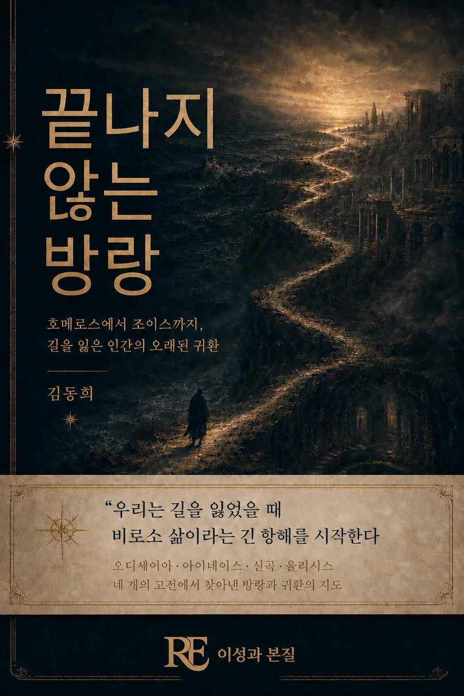

오디세이아, 아이네이스, 신곡, 율리시스. 네 개의 고전을 가로지르며 방랑과 귀환의 지도를 그린다. 우리는 길을 잃었을 때 비로소 삶이라는 긴 항해를 시작한다.
출간일 2026-08-12
오디세이아에서 율리시스까지, 서양 문학은 집으로 돌아가려는 인간의 이야기를 끊임없이 다시 써왔습니다. 이 책은 오디세이아, 아이네이스, 신곡, 율리시스라는 네 개의 고전을 나란히 읽으며 방랑과 귀환이라는 하나의 원형이 시대마다 어떻게 다시 태어나는지를 추적합니다.
고전문학을 원전으로 처음부터 끝까지 읽기는 부담스럽지만 그 정수를 깊이 이해하고 싶은 독자, 문학과 삶을 함께 사유하는 독자.